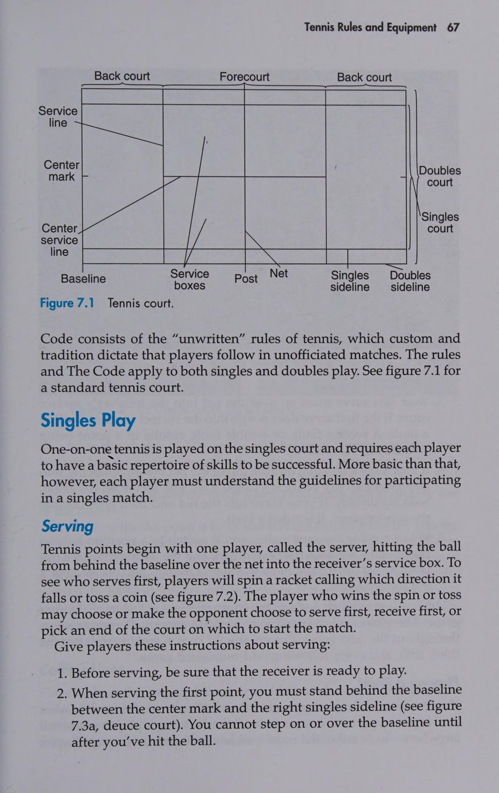
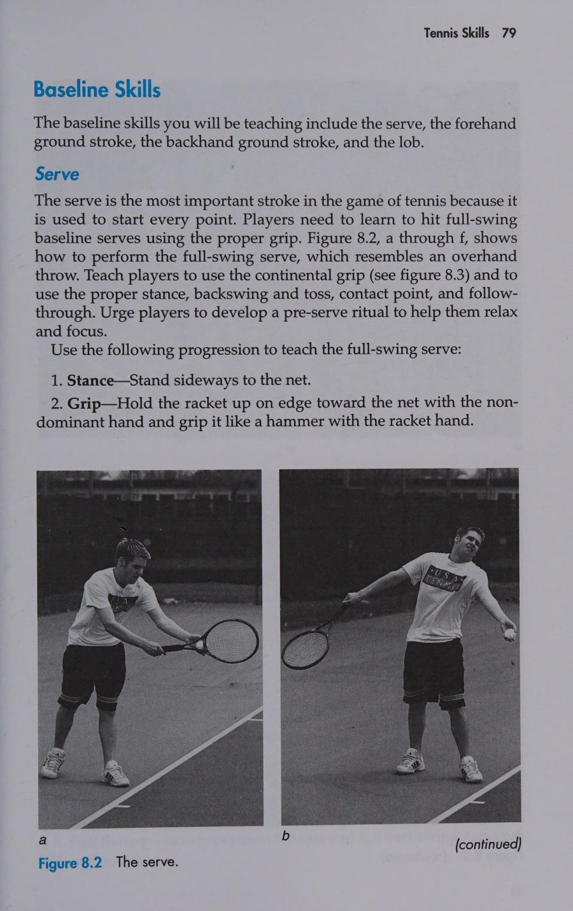
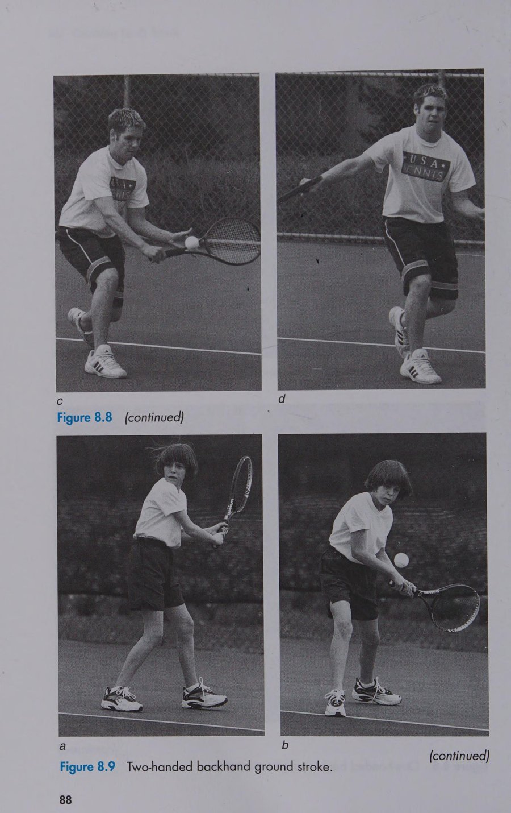
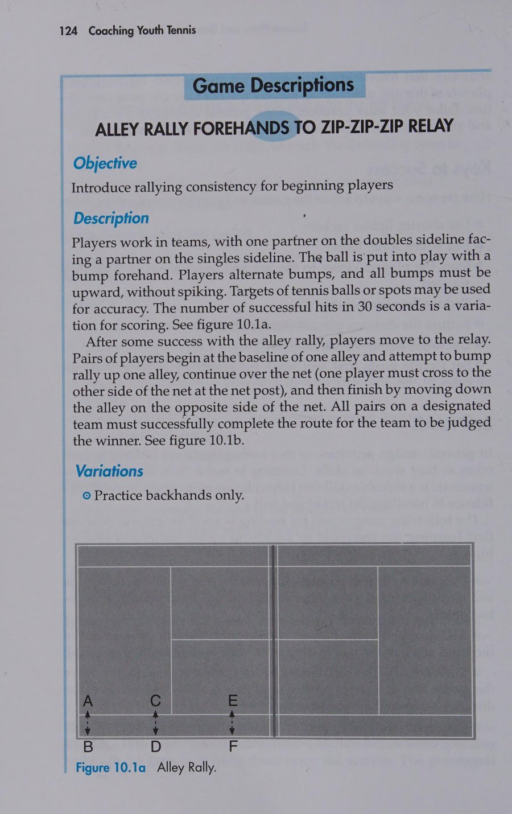
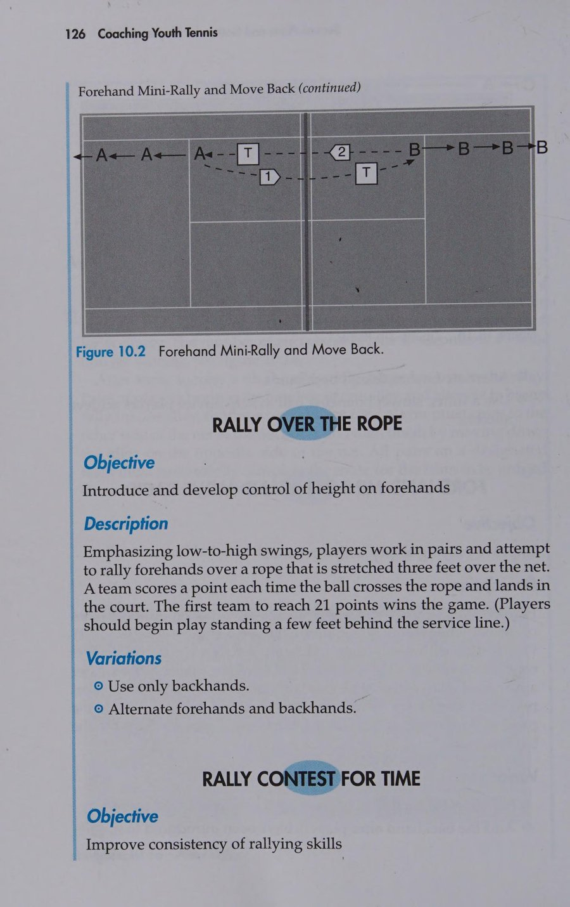
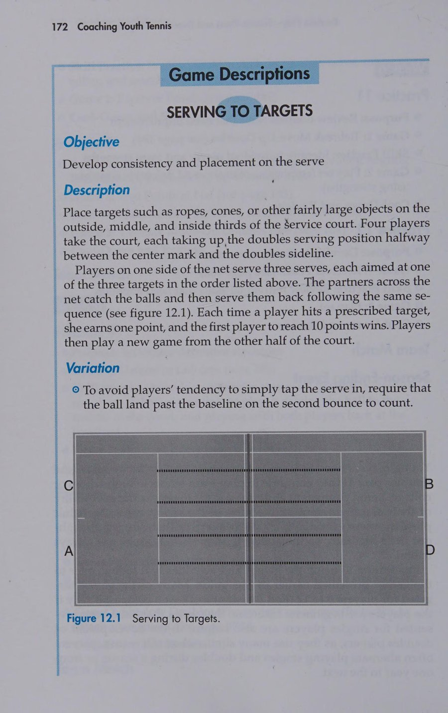

Chào Mừng Đến Với Sự Nghiệp Huấn Luyện Quần Vợt Trẻ
Huấn luyện thể thao cho thanh thiếu niên là một trong những trải nghiệm bổ ích và giàu ý nghĩa nhân văn nhất mà bạn có thể đảm nhận. Khi bước chân vào sân đấu với tư cách là một huấn luyện viên quần vợt trẻ, bạn không chỉ đơn thuần dạy các em cách vung vợt đánh một quả bóng nỉ qua lưới. Bạn đang định hình nhân cách, bồi đắp sự tự tin, rèn luyện tính kiên trì và truyền cảm hứng về tình yêu thể thao suốt đời cho những tâm hồn non trẻ.
Chương trình Giáo dục Thể thao Hoa Kỳ (American Sport Education Program - ASEP) phối hợp cùng Hiệp hội Quần vợt Hoa Kỳ (USTA) biên soạn cuốn cẩm nang này nhằm cung cấp cho bạn những công cụ thực tiễn, khoa học và dễ áp dụng nhất. Dù bạn là một phụ huynh tình nguyện lần đầu đứng lớp hay một huấn luyện viên đã có kinh nghiệm, các nguyên lý trong cuốn sách sẽ giúp bạn xây dựng môi trường học tập an toàn, tràn ngập tiếng cười và đạt hiệu quả huấn luyện vượt trội.
Chú Giải Ký Hiệu Sơ Đồ Huấn Luyện
Xuyên suốt cuốn sách, các sơ đồ bài tập và trò chơi mô phỏng sân đấu sử dụng các ký hiệu chuẩn mực sau:
- C (Coach): Huấn luyện viên hoặc người điều phối bài tập trên sân.
- P (Player / P1, P2,...): Vận động viên trẻ tham gia bài tập hoặc thi đấu.
- Mũi tên nét liền (→): Đường di chuyển không bóng của vận động viên (chạy, chuyển trọng tâm, lùi về vị trí).
- Mũi tên nét đứt (‐‐>): Đường bay hoặc quỹ đạo nảy của quả bóng tennis.
- Vòng tròn có chữ cái / Cọc nón (Cone): Vị trí đặt mốc mục tiêu định hướng trên mặt sân.
- Vạch giới hạn tạm thời: Các đường kẻ phấn hoặc dây thừng phân chia khu vực tập luyện thu nhỏ.
Bước Chân Vào Nghề Huấn Luyện (Stepping Into Coaching)
1. Trách Nhiệm Cốt Lõi Của Huấn Luyện Viên
Nếu bạn giống như hầu hết các huấn luyện viên phong trào trẻ em, bạn có thể được tuyển chọn từ đội ngũ phụ huynh tâm huyết, những người yêu thích thể thao hoặc tình nguyện viên cộng đồng. Rất nhiều người trong số các bạn chưa từng trải qua các khóa đào tạo sư phạm thể thao bài bản. Trọng trách ban đầu có thể tạo ra đôi chút áp lực, nhưng việc thấu hiểu 6 trách nhiệm nền tảng sau đây sẽ giúp bạn luôn đi đúng hướng:
1. Cung Cấp Môi Trường An Toàn
Thường xuyên kiểm tra bề mặt sân, lưới, hàng rào chắn và dụng cụ trước giờ tập. Đảm bảo mọi vật cản nguy hiểm như bóng vương vãi, bình nước hay đá vụn được dọn sạch khỏi khu vực chạy đà.
2. Giao Tiếp Tích Cực
Luôn truyền tải thông điệp bằng thái độ khuyến khích, tôn trọng và ấm áp. Thể hiện rõ ràng rằng bạn quan tâm sâu sắc đến từng cá nhân vận động viên chứ không chỉ nhìn vào thành tích thi đấu.
3. Giảng Dạy Chiến Thuật & Kỹ Năng
Áp dụng "Phương pháp Tiếp cận Trò chơi" (Games Approach) sáng tạo để biến các bài tập khô khan thành những thử thách vận động đầy phấn khích, giúp trẻ hiểu rõ mục đích chiến thuật trước khi mài giũa kỹ thuật.
4. Giảng Dạy Luật Chơi & Tinh Thần Thể Thao
Quần vợt là môn thể thao tự giác tính điểm và tự bắt bóng trong sân hay ngoài sân. Hãy dạy trẻ lòng trung thực, sự công bằng và thói quen giải quyết tranh chấp trong hòa bình ngay từ buổi tập đầu tiên.
5. Chỉ Đạo Thi Đấu Đúng Mực
Trong các trận đấu, hãy giữ vai trò người hướng dẫn điềm tĩnh. Tạo cơ hội cho mọi học viên đều được ra sân thi đấu cọ xát, không bao giờ phân biệt đối xử vì mục tiêu tìm kiếm chiến thắng trước mắt.
6. Phát Triển Phẩm Chất Nhân Cách
Thể thao là bệ phóng rèn luyện lối sống. Hãy giúp học trò học cách chấp nhận thất bại một cách thanh thản, tôn trọng bạn tập, khiêm tốn khi chiến thắng và luôn nỗ lực hết mình trong mọi hoàn cảnh.
2. Tình Huống Huấn Luyện Khi Có Con Em Trong Đội
Huấn luyện chính con ruột của mình là một tình huống rất phổ biến nhưng tiềm ẩn nhiều thử thách tâm lý tinh tế. Phụ huynh làm huấn luyện viên thường dễ rơi vào hai thái cực sai lầm: Hoặc quá ưu ái con khiến các học viên khác cảm thấy bất công, hoặc quá khắt khe và đòi hỏi con phải hoàn hảo hơn những đứa trẻ khác.
Để giải quyết mâu thuẫn vai trò này, hãy thiết lập ranh giới rõ ràng theo nguyên tắc phân định không gian:
- Khi ở trên sân quần vợt: Bạn là Huấn luyện viên của toàn đội. Con bạn là một thành viên bình đẳng, tuân thủ mọi kỷ luật, lượt đổi sân và sự phân công như mọi người bạn khác.
- Khi rời khỏi cổng sân thi đấu: Bạn hoàn toàn trở lại làm Cha/Mẹ. Hãy cởi bỏ vai trò huấn luyện viên, ngừng phân tích lỗi kỹ thuật trên đường về nhà và dành trọn tình thương yêu vô điều kiện cho con mình.
3. Bộ Công Cụ Năm Yếu Tố C-O-A-C-H
Để trở thành một huấn luyện viên xuất sắc, bạn cần trang bị cho mình năm phẩm chất cốt lõi được cấu thành từ chữ viết tắt C-O-A-C-H:
| Chữ Cái | Phẩm Chất (Tiếng Anh & Việt) | Hành Động Thực Tế Trên Sân Tập |
|---|---|---|
| C | Comprehension (Sự Hiểu Biết Toàn Diện) | Nắm vững luật thi đấu, sinh cơ học cơ bản, tâm lý phát triển lứa tuổi và các phương pháp sư phạm thể thao phù hợp cho thanh thiếu niên. |
| O | Outlook (Tầm Nhìn Triết Lý Lành Mạnh) | Khắc sâu phương châm vàng: "Vận Động Viên Là Trên Hết, Chiến Thắng Là Thứ Hai" (Athletes First, Winning Second). Sự tiến bộ của từng em quan trọng hơn bảng tỷ số. |
| A | Affection (Tình Yêu Thương & Lòng Quan Tâm) | Thực sự yêu quý trẻ thơ, lắng nghe tâm tư nguyện vọng của học viên và đối xử bằng tất cả sự kiên nhẫn, chân thành và thấu cảm. |
| C | Character (Nhân Cách & Tư Cách Mẫu Mực) | Luôn làm gương trong lời ăn tiếng nói, cách hành xử công tâm, tôn trọng trọng tài và không bao giờ nổi nóng hay chỉ trích học trò trước đám đông. |
| H | Humor (Khiếu Hài Hước & Niềm Vui Sống) | Tạo bầu không khí thoải mái, sẵn sàng cùng cười đùa với trẻ, biến những pha đánh hỏng ngớ ngẩn thành bài học vui nhộn nhằm giải tỏa căng thẳng cho các em. |
Nghệ Thuật Giao Tiếp Của Huấn Luyện Viên (Communicating As a Coach)
1. Bản Chất Của Giao Tiếp Sư Phạm Thể Thao
Nhiều huấn luyện viên lầm tưởng rằng giao tiếp đơn thuần là việc đứng trước mặt học viên và phát ra mệnh lệnh chỉ đạo liên tục. Trên thực tế, giao tiếp là một quá trình tương tác hai chiều phức tạp, bao gồm việc gửi thông điệp, tiếp nhận tín hiệu và phản hồi thấu cảm. Hiệu quả giao tiếp của bạn phụ thuộc không chỉ vào những gì bạn nói, mà còn vào cách bạn nói và cách người nghe cảm nhận.
Giao tiếp gồm hai kênh thông tin chủ đạo:
- Giao tiếp ngôn từ (Verbal): Sử dụng từ ngữ ngắn gọn, rõ ràng, dễ hiểu, tránh các thuật ngữ giải phẫu học hay cơ học quá phức tạp đối với lứa tuổi thiếu nhi.
- Giao tiếp phi ngôn từ (Nonverbal): Chiếm tới hơn 70% tác động tâm lý. Bao gồm nụ cười thân thiện, ánh mắt khích lệ, tư thế cởi mở ngang tầm mắt trẻ (ngồi xổm hoặc cúi thấp người khi trò chuyện), và cử chỉ vỗ tay tán thưởng.
2. Lắng Nghe Tích Cực (Active Listening)
Một huấn luyện viên vĩ đại trước hết phải là một người biết lắng nghe xuất sắc. Khi một học viên trẻ muốn bày tỏ nỗi sợ hãi khi giao bóng hay sự thất vọng sau một pha bóng hỏng, bạn cần thực hành các bước lắng nghe tích cực sau:
- Tập trung toàn bộ sự chú ý vào đứa trẻ, tạm dừng việc nhặt bóng hay nhìn đồng hồ.
- Hạ tầm mắt xuống ngang tầm mắt của học viên để tạo cảm giác an toàn và gần gũi.
- Nhắc lại cảm xúc của trẻ bằng lời lẽ đồng cảm: "Thầy hiểu là con đang cảm thấy rất bực mình vì bóng hay rúc lưới đúng không? Đừng lo, chúng ta sẽ cùng chỉnh lại điểm tiếp xúc ngay bây giờ."
- Đặt những câu hỏi gợi mở thay vì những câu tra khảo đổ lỗi: "Theo con, điều gì khiến quả bóng vừa rồi bay ra ngoài vạch cuối sân?"
3. Kỹ Thuật Phản Hồi Bánh Kẹp (Sandwich Feedback)
Trẻ em rất nhạy cảm trước những lời chê bai trực diện. Nếu bạn liên tục hét lên: "Sai rồi! Không được hạ vợt như thế!", đứa trẻ sẽ nhanh chóng co mình lại vì xấu hổ và sợ mắc lỗi. Hãy áp dụng kỹ thuật phản hồi tích cực 3 lớp (Sandwich Feedback):
Công Thức Ba Lớp: Khen → Chỉnh → Động Viên
- Lớp trên (Lời khen cụ thể): Khởi đầu bằng việc ghi nhận nỗ lực hoặc một chi tiết làm đúng của học viên. Ví dụ: "Bộ chân di chuyển đón bóng của con hôm nay rất nhanh và thanh thoát!"
- Lớp nhân (Hướng dẫn điều chỉnh kỹ thuật): Đưa ra một điểm mấu chốt cần sửa một cách tích cực. Ví dụ: "Bây giờ, khi con chuẩn bị chạm bóng, hãy giữ mặt vợt hơi nghiêng về phía trước và tiếp xúc bóng phía trước thân người một chút nhé."
- Lớp dưới (Lời khích lệ tràn đầy niềm tin): Kết thúc bằng sự động viên mạnh mẽ. Ví dụ: "Thử lại ngay pha bóng này nào, thầy tin chắc con sẽ đưa bóng đi sâu sát vạch một cách đẹp mắt!"
4. Xây Dựng Cầu Nối Giao Tiếp Với Phụ Huynh
Phụ huynh là đồng minh quan trọng nhất nhưng đôi khi cũng là nguồn gây áp lực lớn nhất đối với các huấn luyện viên trẻ. Hãy chủ động tổ chức một buổi gặp mặt phụ huynh trước khi mùa giải bắt đầu (Preseason Parent Meeting) để thống nhất các nguyên tắc làm việc:
- Giải thích rõ ràng triết lý thi đấu của đội: Sự tiến bộ cá nhân và niềm vui vận động luôn được đặt lên trên cúp vô địch hay thành tích thắng thua.
- Yêu cầu phụ huynh cổ vũ văn minh: Tuyệt đối không la hét chỉ đạo kỹ thuật từ bên ngoài hàng rào sân đấu làm phân tâm vận động viên.
- Quy định thời gian trao đổi riêng: Nếu phụ huynh có thắc mắc về con em mình, hãy hẹn gặp HLV sau buổi tập hoặc liên hệ qua điện thoại vào khung giờ cố định, tránh tranh cãi trực tiếp trước mặt các em nhỏ trên sân.
Đảm Bảo An Toàn Tuyệt Đối Cho Vận Động Viên Trẻ (Providing for Players' Safety)
1. Đánh Giá Môi Trường & Thiết Bị Tập Luyện
Trẻ em tham gia thể thao luôn tiềm ẩn nguy cơ chấn thương nếu sân bãi không được quản lý chặt chẽ. Huấn luyện viên có trách nhiệm pháp lý và đạo đức trong việc bảo đảm an toàn cho các em. Hãy thực hiện danh mục kiểm tra an toàn sân đấu trước mỗi buổi tập:
- Bề mặt sân: Mặt sân phải khô ráo hoàn toàn. Tuyệt đối không cho trẻ tập trên sân bê tông trơn ướt hoặc có lá cây, rêu mốc mục nát.
- Khoảng cách an toàn và quản lý bóng: Khi thực hiện các bài tập phát bóng hoặc đánh qua lưới, những quả bóng nằm vương vãi trên mặt sân là nguyên nhân hàng đầu gây lật cổ chân nguy hiểm. Hãy rèn luyện cho trẻ thói quen nhặt bóng vào giỏ trước khi bắt đầu bài tập tiếp theo.
- Giày thi đấu: Yêu cầu phụ huynh trang bị giày quần vợt chuyên dụng với đế ma sát bám sân tốt và phần thân ôm chắc mắt cá. Tuyệt đối không cho trẻ đi dép quai hậu, giày chạy bộ đế xốp cao (chassis chạy bộ thiếu gờ chống lật ngang rất dễ gây bong gân mắt cá chân).
2. Phòng Ngừa Mất Nước & Sốc Nhiệt
Hệ thống điều hòa thân nhiệt của trẻ em chưa hoàn thiện như người lớn; các em tiết mồ hôi ít hơn và dễ bị tích tụ nhiệt độ cơ thể khi vận động dưới thời tiết nắng nóng oi bức. Hãy thực hiện phác đồ bảo vệ thân nhiệt nghiêm ngặt:
- Uống nước định kỳ: Cứ sau mỗi 15 đến 20 phút tập luyện, hãy cho trẻ nghỉ ngơi trong bóng râm và uống từng ngụm nước nhỏ (từ 100 đến 150 ml nước lọc hoặc dung dịch điện giải). Không đợi đến khi trẻ cảm thấy khát mới cho uống nước.
- Nhận diện kiệt sức vì nhiệt (Heat Exhaustion): Dấu hiệu gồm da tái lạnh, toát nhiều mồ hôi, hoa mắt chóng mặt, buồn nôn, đau đầu và hụt hơi. Lập tức đưa trẻ vào bóng râm mát, nới lỏng quần áo, cho uống nước mát từng ngụm và chườm khăn ướt lên trán và cổ.
- Nhận diện sốc nhiệt (Heat Stroke - Cấp cứu khẩn cấp): Da nóng đỏ khô khốc, ngừng tiết mồ hôi, thở nhanh nông, mất định hướng hoặc bất tỉnh. Lập tức gọi xe cấp cứu (115), hạ thân nhiệt khẩn cấp bằng nước mát hoặc đá bọc vải chườm vào vùng bẹn, nách và cổ.
3. Phác Đồ Xử Lý Sơ Cứu Ban Đầu: R-I-C-E
Đối với các chấn thương phần mềm cấp tính thường gặp trên sân quần vợt như bong gân cổ chân, căng cơ đùi hoặc đụng giập mô mềm, hãy ghi nhớ và thực hiện chính xác quy trình 4 bước R-I-C-E trong 24 đến 48 giờ đầu tiên:
R - Rest (Nghỉ Ngơi Tuyệt Đối)
Ngừng ngay mọi hoạt động vận động. Không để vận động viên cố gắng chạy nhảy tiếp tục vì điều này sẽ làm rách thêm các sợi cơ hoặc dây chằng bị tổn thương.
I - Ice (Chườm Đá Giảm Đau)
Chườm túi đá bọc trong khăn vải mềm lên vị trí tổn thương từ 15 đến 20 phút mỗi lần, cách nhau 2 đến 3 giờ. Tuyệt đối không áp trực tiếp đá lạnh lên da trần để tránh bỏng lạnh.
C - Compression (Băng Ép Cố Định)
Dùng băng thun co giãn quấn ép nhẹ nhàng quanh khớp bị chấn thương để kiểm soát tình trạng phù nề sưng tấy. Quấn vừa tay, tránh quấn quá chặt làm cản trở tuần hoàn máu.
E - Elevation (Kê Cao Chi Tổn Thương)
Kê phần chi bị thương (chân hoặc tay) lên cao hơn mức tim của vận động viên khi nằm nghỉ ngơi nhằm giúp máu và dịch bạch huyết lưu thông trở về, giảm sưng phù nhanh chóng.
4. Hồ Sơ Y Tế & Kế Hoạch Ứng Phó Khẩn Cấp (EAP)
Mỗi huấn luyện viên cần mang theo bên mình một túi cứu thương chuẩn mực và một tập kẹp hồ sơ y tế của toàn đội. Hồ sơ bao gồm:
- Phiếu thông tin khẩn cấp của vận động viên (Appendix B): Ghi rõ họ tên, số điện thoại liên lạc của bố mẹ, tiền sử dị ứng thuốc/ong đốt, bệnh hen suyễn và các lưu ý y khoa đặc biệt.
- Báo cáo chấn thương (Appendix A): Bản ghi chép chi tiết thời gian, địa điểm, cơ chế chấn thương, biện pháp sơ cứu đã áp dụng và người tiếp nhận bàn giao y tế.
- Quy trình gọi cấp cứu (Appendix C): Phân công rõ ràng một người chịu trách nhiệm sơ cứu, một người gọi điện thoại cấp cứu và một người ra cổng sân đón dẫn xe cứu thương.
Phương Pháp Tiếp Cận Trò Chơi Trong Huấn Luyện Quần Vợt (The Games Approach)
1. Khái Niệm: Tiếp Cận Trò Chơi So Với Tiếp Cận Truyền Thống
Bạn có còn nhớ những ký ức tuổi thơ khi lần đầu học chơi một môn thể thao trong các lớp thể dục truyền thống? Rất có thể bạn đã phải đứng xếp thành một hàng dài dằng dặc, kiên nhẫn chờ đợi từng lượt vung vợt ngắn ngủi theo những bài tập lập dị lập lại khô khan. Người lớn thường bắt bạn phải tập kỹ thuật cô lập hàng tuần liền trước khi cho phép bạn bước vào một trận đấu thực sự. Phương pháp cũ kỹ này thường được gọi mỉa mai là "kỹ thuật - lặp lại - dập tắt đam mê" (Skill - Drill - Kill the enthusiasm).
Ngược lại, hãy nhớ lại cách bạn cùng lũ bạn trong xóm tự học chơi bóng trên đường phố hay bãi cỏ. Trẻ con lập tức lao vào chơi trận đấu ngay từ giây đầu tiên. Các em tự điều chỉnh luật, tự chỉ cho nhau cách đánh để giữ cho trận đấu tiếp diễn và tràn ngập niềm vui. "Phương pháp Tiếp cận Trò chơi" (The Games Approach) do ASEP tiên phong phát triển chính là việc chuyển hóa tinh thần tự nhiên đó vào giáo án huấn luyện thể thao hiện đại.
| Tiêu Chí Đánh Giá | Phương Pháp Truyền Thống (Traditional Drill) | Phương Pháp Tiếp Cận Trò Chơi (Games Approach) |
|---|---|---|
| Trọng tâm học tập | Học "cách thực hiện" (How to do) kỹ thuật cơ học trước khi hiểu bối cảnh. | Học "cần phải làm gì" (What to do) về mặt chiến thuật trước, sau đó mới mài giũa kỹ thuật. |
| Động lực của học viên | Thụ động, dễ buồn ngủ và chán nản vì phải chờ đợi lượt tập trong hàng dài. | Chủ động, phấn khích tột độ vì liên tục được chạm bóng và giải quyết tình huống thi đấu. |
| Vai trò của huấn luyện viên | Người giảng đạo, liên tục ra lệnh và thị phạm áp đặt một mẫu động tác duy nhất. | Người thiết kế môi trường trò chơi, đặt câu hỏi gợi mở để trẻ tự mình khám phá giải pháp. |
| Khả năng ứng dụng | Đánh bóng đẹp mắt khi bóng ném cố định, nhưng lúng túng khi vào trận đấu thật. | Thích ứng linh hoạt, đọc tình huống sân đấu xuất sắc và có bản lĩnh thi đấu tự nhiên. |
2. Cấu Trúc Bốn Bước Của Phương Pháp Tiếp Cận Trò Chơi
Để triển khai phương pháp tiếp cận trò chơi trên sân tập hàng ngày, huấn luyện viên áp dụng quy trình 4 giai đoạn khép kín:
Bước 1: Bắt Đầu Bằng Trò Chơi Mô Phỏng
Cho học viên tham gia ngay vào một trò chơi có luật điều chỉnh (ví dụ: sân thu nhỏ, bóng mềm, tính điểm chạm vạch). Trò chơi này được thiết kế có chủ đích để làm nổi bật một vấn đề chiến thuật cụ thể.
Bước 2: Tạm Dừng & Gợi Mở (Freeze & Question)
Khi nhận thấy các em gặp khó khăn trong việc thực hiện mục tiêu chiến thuật, HLV ra hiệu "Đóng băng!" (Freeze), giữ nguyên vị trí của trẻ trên sân và đặt các câu hỏi gợi mở khám phá.
Bước 3: Thực Hành Kỹ Năng Định Hình
Sau khi các em đã nhận ra kỹ năng mình còn thiếu (ví dụ: cần góc mở vợt hướng lên để đưa bóng vượt qua lưới), HLV hướng dẫn một bài tập định hình ngắn để các em hoàn thiện động tác đó.
Bước 4: Quay Trở Lại Trò Chơi Thi Đấu
Đưa học viên quay trở lại trò chơi ban đầu hoặc nâng cấp độ khó. Trẻ sẽ hào hứng áp dụng ngay kỹ năng vừa được trau chuốt vào việc ghi điểm và giành chiến thắng chiến thuật.
3. Nghệ Thuật Đặt Câu Hỏi Gợi Mở (Discovery Questioning)
Trái tim của phương pháp tiếp cận trò chơi là nghệ thuật đặt câu hỏi thay vì áp đặt câu trả lời. Hãy so sánh hai cách tiếp cận sau:
- Cách áp đặt cũ: "Các con phải đánh bóng chéo sân sang góc trái của bạn thì mới ăn điểm được!"
- Cách gợi mở tiếp cận trò chơi: HLV tạm dừng bóng và hỏi: "Khi bạn Nam đang đứng lệch hẳn sang góc phải sân để chờ bóng, khoảng trống lớn nhất trên sân của bạn ấy đang nằm ở đâu? Con cần đánh bóng vào vị trí nào để bạn ấy khó với tới nhất?"
Khi câu trả lời được chính đứa trẻ tự suy nghĩ và thốt ra từ miệng mình, nhận thức chiến thuật đó sẽ biến thành tri thức sống động của bản thân em và được khắc sâu vĩnh viễn vào phản xạ thi đấu.
Giảng Dạy Và Định Hình Kỹ Năng (Teaching and Shaping Skills)
1. Quy Trình Sư Phạm Bốn Bước I.D.E.A.
Khi giảng dạy một kỹ thuật quần vợt mới (như quả thuận tay, quả bắt lưới hay cú giao bóng), huấn luyện viên cần thực hiện đúng trình tự 4 bước chuẩn mực được viết tắt là I.D.E.A.:
I - Introduce (Giới Thiệu Kỹ Năng)
Gọi tên kỹ năng ngắn gọn, rõ ràng. Nêu bật ý nghĩa thực chiến: Kỹ năng này giúp con làm gì trong trận đấu (ví dụ: quả cắt bóng ngắn giúp con kéo đối thủ lên lưới).
D - Demonstrate (Thị Phạm Trực Quan)
Thực hiện động tác chuẩn xác từ 2 đến 3 góc nhìn khác nhau (nhìn từ phía sau, nhìn ngang và nhìn đối diện). Thực hiện ở tốc độ bình thường và sau đó thực hiện chậm rãi từng pha.
E - Explain (Giải Thích Điểm Mấu Chốt)
Sử dụng 1 đến 2 cụm từ then chốt (cues) ngắn gọn, giàu hình tượng mà trẻ dễ nhớ. Ví dụ: "Vung vợt từ túi quần dưới lên ngang vai như vắt khăn quàng cổ".
A - Attend (Quan Sát & Hướng Dẫn Thực Hành)
Lập tức cho tất cả học viên bắt tay vào tập luyện theo cặp. HLV di chuyển liên tục quanh sân, quan sát, củng cố những điểm làm đúng và đưa ra phản hồi sửa lỗi kịp thời.
2. Phương Pháp Định Hình Kỹ Năng (Shaping Skills)
Trẻ em không thể ngay lập tức thực hiện hoàn hảo một chuỗi động tác phức tạp. Huấn luyện viên cần áp dụng nguyên lý định hình kỹ năng (shaping):
- Chia nhỏ kỹ năng thành các bước vi mô: Ví dụ đối với cú giao bóng, trẻ không nên tung bóng và vung toàn bộ thân người cùng lúc. Hãy chia nhỏ: (1) Tập tung bóng vào giỏ đặt phía trước chân trái; (2) Tập vung vợt tiếp xúc bóng ở tầm với cao nhất; (3) Kết hợp nhịp nhàng tung bóng và đánh bóng qua lưới.
- Củng cố những bước tiến bộ kế tiếp (Successive Approximations): Khen ngợi ngay cả khi động tác chưa hoàn hảo tuyệt đối nhưng đã có sự cải thiện so với lần trước.
- Tập trung vào một chi tiết tại một thời điểm: Tuyệt đối không chỉ ra 4 hay 5 lỗi cùng một lúc khiến trẻ hoang mang, mất phương hướng. Hãy sửa lỗi cốt lõi nhất trước (điểm tiếp xúc bóng), khi trẻ đã làm chủ điểm này mới chuyển sang chỉnh bộ chân hoặc đà vung vợt kết thúc.
3. Phân Biệt Lỗi Nhận Thức Và Lỗi Thực Thi
Để sửa lỗi hiệu quả, huấn luyện viên phải nhận định chính xác bản chất của sai sót:
- Lỗi nhận thức (Learning Errors): Học viên thực sự chưa hiểu rõ mình cần phải làm gì hoặc chưa nắm vững khái niệm sinh cơ học (ví dụ: chưa hiểu tại sao tiếp xúc bóng sau thân người lại khiến bóng bay bổng ra ngoài sân). Trường hợp này đòi hỏi HLV phải kiên nhẫn giảng giải lại và thị phạm mẫu chậm rãi.
- Lỗi thực thi (Performance Errors): Học viên hoàn toàn hiểu lý thuyết và đã làm đúng nhiều lần trước đó, nhưng mắc lỗi do mệt mỏi, mất tập trung, vội vàng hoặc áp lực tâm lý. Trường hợp này không cần giải thích lại kỹ thuật, mà cần nhắc nhở từ khóa tập trung, cho trẻ nghỉ ngơi hoặc thả lỏng tâm lý.
4. Quản Lý Kỷ Luật & Hành Vi Tiêu Cực Trên Sân
Khi trẻ mất tập trung, nghịch phá dụng cụ hoặc trêu chọc bạn tập, người huấn luyện cần xử lý bình tĩnh, công tâm dựa trên 3 cấp độ can thiệp:
- Phớt lờ có chọn lọc (Extinction): Đối với những hành vi quậy phá nhỏ nhằm mục đích gây sự chú ý của mọi người, việc HLV làm lơ không phản ứng sẽ khiến hành vi đó tự động thoái trào vì trẻ không đạt được mục đích thu hút sự chú ý.
- Củng cố tích cực hành vi đối lập: Khen ngợi những em đang thực hiện nghiêm túc: "Thầy rất khen ngợi nhóm bạn Minh đang xếp hàng rất trật tự và sẵn sàng đón bóng!". Những em khác sẽ lập tức noi gương theo để được nhận lời khen.
- Cách ly tạm thời (Time-out): Khi hành vi đe dọa an toàn (như ném vợt, đánh bóng bừa bãi vào người bạn), hãy yêu cầu học viên ngồi ra ghế nghỉ bên lề sân trong 3 đến 5 phút để bình tâm lại. Sau đó, HLV đến trò chuyện ngắn gọn, giải thích lý do kỷ luật và chào đón em trở lại tập luyện.
Huấn Luyện Trong Ngày Thi Đấu (Match-Day Coaching)
1. Chuẩn Bị Trước Giờ Thi Đấu
Ngày thi đấu là dịp để các vận động viên trẻ trình diễn những gì các em đã miệt mài học hỏi trên sân tập. Vào ngày này, vai trò của bạn chuyển dịch từ người giảng dạy kỹ năng sang người định hướng tâm lý và hỗ trợ chiến thuật thi đấu. Để các em bước vào trận đấu với tâm thế tự tin nhất, huấn luyện viên cần hướng dẫn học trò chuẩn bị chu đáo các khâu sau:
Dinh Dưỡng Thi Đấu
Khuyên vận động viên ăn một bữa ăn giàu carbohydrate (cơm, bánh mì ngũ cốc, mì ống) trước giờ thi đấu khoảng 3 đến 4 tiếng để dạ dày kịp tiêu hóa hoàn toàn. Trong vòng 1 đến 2 giờ trước trận, chỉ nên dùng đồ ăn nhẹ dễ tiêu như một quả chuối hoặc thanh năng lượng.
Bổ Sung Nước Trước Trận
Bắt đầu uống nước đều đặn từ đêm hôm trước. Uống khoảng 400 đến 600 ml nước trước giờ thi đấu 2 tiếng, và thêm 200 ml nước khoảng 15 phút trước khi bước vào sân khởi động.
Chuẩn Bị Túi Đồ Thi Đấu
Tập cho trẻ thói quen tự chuẩn bị tối thiểu 2 cây vợt đã căng cước hoàn hảo, khăn lau mồ hôi, mũ che nắng, kem chống nắng, bình nước giữ nhiệt lớn và bộ quần áo dự phòng.
Khởi Động Động (Dynamic Warm-Up)
Dành 10 đến 15 phút khởi động toàn thân với các bài tập chạy nâng cao đùi, gót chạm mông, bước trượt ngang, xoay khớp vai và vung vợt mô phỏng trước khi vào sân đánh khởi động với bóng.
2. Chỉ Đạo Trong Trận Đấu (Coaching During the Match)
Trong quần vợt lứa tuổi thanh thiếu niên, huấn luyện viên cần tuân thủ nghiêm ngặt quy định về hướng dẫn của ban tổ chức giải. Khi được phép trao đổi trong giờ đổi sân (changeover), hãy ghi nhớ các nguyên tắc vàng sau:
- Giữ thái độ điềm tĩnh và tích cực: Vẻ mặt căng thẳng, cau mày hoặc thở dài của bạn sẽ lập tức truyền nỗi sợ hãi sang đứa trẻ. Hãy luôn nở nụ cười khích lệ và truyền sự bình an.
- Tối giản thông điệp chiến thuật: Trí não của trẻ khi đang thi đấu chịu áp lực nhịp tim cao, không thể tiếp thu những bài phân tích dài dòng. Chỉ nhắc lại đúng 1 hoặc 2 từ khóa chiến thuật trọng tâm (ví dụ: "Đưa bóng bổng sâu sang góc trái của bạn", hoặc "Nhìn bóng chạm vào giữa tâm vợt").
- Tránh chỉ trích lỗi kỹ thuật vừa xảy ra: Giữa trận đấu không phải là lúc sửa động tác cơ học. Hãy tập trung vào việc định hướng chiến thuật tiếp theo và động viên tinh thần chiến đấu kiên cường.
3. Định Hình Quan Niệm Đúng Đắn Về Thắng Và Thua
Một trong những bài học nhân cách vĩ đại nhất mà thể thao mang lại cho tuổi trẻ là cách đón nhận thành bại. Huấn luyện viên phải luôn khắc sâu phương châm: Chiến thắng là nỗ lực phấn đấu hết mình, chứ không đơn thuần là điểm số trên bảng điện tử.
Sau trận đấu, hãy thực hiện buổi tổng kết ngắn:
- Nếu thắng trận: Khen ngợi tinh thần tập trung và sự tôn trọng đối thủ. Nhắc nhở các em giữ đức khiêm tốn, lịch thiệp bắt tay cảm ơn đối phương và trọng tài.
- Nếu thua trận: Ôm động viên học viên, ghi nhận những pha bóng xuất sắc mà em đã thực hiện được. Giúp em nhìn nhận thất bại như một người thầy chỉ ra những điểm cần hoàn thiện trong các buổi tập sắp tới: "Thua một trận đấu không biến con thành người thất bại; bỏ cuộc mới thực sự là thất bại".
Luật Thi Đấu Và Trang Thiết Bị Cho Trẻ Em (Tennis Rules and Equipment)
1. Quy Chuẩn Trang Thiết Bị Theo Lứa Tuổi
Sai lầm phổ biến nhất trong đào tạo quần vợt phong trào là cho trẻ nhỏ dùng vợt quá nặng hoặc bóng tiêu chuẩn của người lớn quá sớm. Điều này gây hỏng khớp cổ tay, tạo tật xấu trong kỹ thuật và khiến trẻ nhanh chóng nản lòng. Hãy tuân thủ chuẩn mực phát triển thể chất:
| Nhóm Tuổi | Chiều Dài Cây Vợt Khuyến Nghị | Loại Bóng Quần Vợt | Kích Thước Sân Khuyến Nghị |
|---|---|---|---|
| Dưới 8 tuổi (Hạng Đỏ) | 19 inch đến 21 inch (48 - 53 cm) | Bóng Đỏ (Bóng mút xốp hoặc bóng nỉ nén 25%, to hơn, nảy chậm) | Sân thu nhỏ 36 ft (11 m x 5.5 m), lưới cao 0.8 m |
| 9 đến 10 tuổi (Hạng Cam) | 23 inch đến 25 inch (58 - 63 cm) | Bóng Cam (Bóng nỉ nén 50% áp suất, nảy thấp hơn) | Sân 60 ft (18 m x 6.4 m đối với đơn), lưới cao 0.85 m |
| 11 đến 12 tuổi (Hạng Xanh Lá) | 25 inch đến 26 inch (63 - 66 cm) | Bóng Chấm Xanh (Green Dot - nén 75% áp suất) | Sân tiêu chuẩn 78 ft (23.77 m), chiều cao lưới chuẩn mực |
| Trên 12 tuổi (Hạng Vàng) | 27 inch tiêu chuẩn (68.5 cm) | Bóng Vàng tiêu chuẩn (Yellow Ball) | Sân tiêu chuẩn 78 ft x 27 ft (đơn) hoặc 36 ft (đôi) |

Hình 7.1: Sơ đồ kích thước tiêu chuẩn của sân quần vợt, bao gồm vạch cuối sân (baseline), ô giao bóng (service boxes), hành lang đánh đôi (doubles alleys) và vạch mốc giữa sân (center mark).
2. Luật Thi Đấu Cơ Bản & Quy Tắc Tính Điểm
Hãy giải thích hệ thống tính điểm độc đáo của môn quần vợt cho trẻ bằng ngôn từ sinh động, dễ liên tưởng:
- Điểm số trong game: Bắt đầu từ Love (0 điểm). Điểm thứ nhất là 15, điểm thứ hai là 30, điểm thứ ba là 40, và điểm thứ tư thắng Game.
- Tỷ số Deuce & Lợi thế (Advantage): Khi hai bên hòa 40-40, gọi là Deuce. Người ghi điểm tiếp theo giành "Lợi thế" (Advantage - Ad in cho người giao bóng, Ad out cho người đỡ bóng). Nếu người có lợi thế thắng điểm tiếp theo, họ thắng game; nếu thua, tỷ số quay lại Deuce.
- Ván đấu (Set) & Loạt Tie-break: Vận động viên đầu tiên thắng 6 game với cách biệt tối thiểu 2 game sẽ thắng set (ví dụ 6-4, 6-3). Nếu tỷ số hòa 6-6, loạt tie-break 7 điểm sẽ được áp dụng (ai chạm 7 điểm trước và cách biệt 2 điểm sẽ thắng set). Hai bên đổi sân sau mỗi 6 điểm trong loạt tie-break.
3. Văn Hóa Ứng Xử & Luật Bất Thành Văn (Court Conduct)
Quần vợt là môn thể thao của những quý ông và quý cô danh dự. Huấn luyện viên cần dạy học viên những quy tắc đạo đức bất thành văn:
- Nguyên tắc tôn trọng đối thủ khi bắt bóng (Benefit of the doubt): Trong các trận đấu không có trọng tài dây, nếu quả bóng rơi sát vạch và người nhận bóng không thể khẳng định 100% bóng ra ngoài, quả bóng đó bắt buộc phải được tính là bóng trong sân.
- Hô to rõ ràng: Luôn hô "Out" hoặc "Fault" ngay lập tức kèm theo cử chỉ ngón tay chỉ lên trời dứt khoát. Không được chần chừ đánh trả rồi mới hô bóng ra.
- Không đánh trả bóng khi đối phương phát lỗi bóng 1: Khi quả giao bóng thứ nhất chạm lưới hoặc ra ngoài, người nhận bóng chỉ cần để bóng trôi qua hoặc gạt nhẹ sang lề sân, không được đập bóng thật mạnh ngược lại làm gián đoạn nhịp giao bóng 2 của đối thủ.
- Truyền bóng lịch sự: Khi trả bóng cho người giao bóng, hãy lăn bóng nhẹ nhàng hoặc đánh bóng bổng êm ái đến ngay vị trí đứng của bạn, tuyệt đối không bắn bóng bừa bãi.
Kỹ Thuật Nền Tảng Cốt Lõi (Tennis Skills)
1. Cảm Giác Bóng & Kiểm Soát Mặt Vợt (Racket Face Control)
Kỹ năng cơ bản nhất trong quần vợt là làm chủ mặt vợt tại thời điểm tiếp xúc bóng. Cho dù cơ thể xoay chuyển như thế nào, quả bóng sẽ luôn bay về hướng mà mặt vợt hướng tới tại khoảnh khắc va chạm. Ba trạng thái góc mở mặt vợt cơ bản:
- Mặt vợt mở (Open face): Hướng chếch lên trời, làm bóng bay bổng cao lên không trung (dùng cho cú lốp bóng hoặc cắt bóng).
- Mặt vợt vuông góc (Square face): Thẳng góc với hướng đánh, đưa bóng đi căng phẳng về phía trước.
- Mặt vợt úp (Closed face): Hướng chúc nhẹ xuống mặt sân, tạo xoáy cuộn cống (topspin) đưa bóng cắm nhanh xuống sân đối phương.
2. Cú Thuận Tay Cơ Bản (Forehand Ground Stroke)
Cú đánh thuận tay là vũ khí tấn công cơ bản và tự nhiên nhất của mọi tay vợt trẻ. Tiến trình giảng dạy chuẩn mực gồm 5 giai đoạn liên hoàn:

Hình 8.2: Chuỗi động tác phân rã cú đánh thuận tay: Từ tư thế sẵn sàng, mở vợt xoay vai, hạ đầu vợt, tiếp xúc bóng phía trước và vung vợt kết thúc qua vai.
- Tư thế sẵn sàng (Ready Position): Hai chân rộng bằng vai, gối hơi chùng, giữ vợt phía trước ngực bằng cả hai tay, mắt dõi theo bóng.
- Xoay vai và mở vợt sớm (Unit Turn): Ngay khi nhận diện bóng bay sang bên thuận tay, xoay toàn bộ hông và vai sang ngang. Đưa vợt ra sau theo quỹ đạo vòng cung chữ C mượt mà.
- Hạ đầu vợt (Drop): Thả đầu vợt xuống thấp hơn quỹ đạo của quả bóng đang bay tới để tạo đà vung từ dưới lên trên.
- Tiếp xúc bóng (Contact): Đánh bóng ở vị trí phía trước hông trước khoảng một gang tay, mặt vợt vuông góc với hướng mục tiêu. Cổ tay khóa chắc chắn.
- Vung vợt kết thúc (Follow-Through): Tiếp tục vung vợt lên cao qua vai đối diện như động tác quàng khăn ấm, thân người giữ thăng bằng vững chãi.
3. Cú Trái Tay Hai Tay (Two-Handed Backhand Ground Stroke)
Đối với trẻ em và thiếu niên, cú trái tay hai tay là lựa chọn tối ưu nhờ cung cấp thêm sức mạnh từ tay không thuận và tăng cường khả năng kiểm soát mặt vợt khi đón các đường bóng nảy cao:

Hình 8.9: Kỹ thuật cú trái tay hai tay chuẩn mực: Tay thuận cầm Continental phía dưới, tay không thuận cầm Eastern forehand phía trên, xoay vai sâu và tiếp xúc bóng phía trước thân người.
- Cách cầm vợt: Tay thuận (tay dưới) cầm kiểu Continental (số 2); tay không thuận (tay trên) cầm kiểu Eastern thuận tay (số 3). Tay không thuận đóng vai trò như cánh tay vung cú thuận tay chính để đẩy bóng đi.
- Chuẩn bị và tiếp xúc: Xoay hông và lưng hơi hướng về phía lưới để tích lũy thế năng xoắn cơ thân; bước chân phải (đối với người thuận tay phải) chéo lên phía trước; tiếp xúc bóng ngay phía trước đầu gối chân trước.
- Kết thúc đà vung: Cả hai tay vung bổng vợt qua vai phải, khuỷu tay không thuận nâng cao ngang tầm cằm.
4. Quả Bắt Lưới (Volley)
Bắt lưới là kỹ năng tấn công cự ly gần đòi hỏi phản xạ nhanh và sự đơn giản hóa tối đa chuyển động. Nguyên tắc vàng của quả volley: Không vung đà ra sau (No backswing).
- Cầm vợt kiểu Continental cho cả quả volley thuận tay và trái tay.
- Giữ mặt vợt luôn ở phía trước tầm mắt, cao hơn cổ tay.
- Khi bóng đến, chỉ cần bước chân đối diện lên chéo và "chặn - đấm" (punch) nhẹ nhàng vào bóng, mượn chính tốc độ của bóng đối phương để đưa bóng sang phần sân trống.
5. Cú Giao Bóng (Serve) & Đập Bóng Trên Cao (Overhead Smash)
Giao bóng là cú đánh mở màn then chốt, là cú đánh duy nhất mà vận động viên hoàn toàn chủ động kiểm soát bóng trong tay mình:
- Tư thế đứng: Đứng sau vạch cuối sân, chân trước hướng chéo 45 độ về phía cột lưới đối diện, chân sau song song với vạch cuối sân.
- Tung bóng ổn định: Tay tung bóng nâng thẳng mềm mại từ khớp vai, thả bóng ở tầm cao hơn tầm với của cây vợt một chút và hơi chếch về phía trước trong sân.
- Tư thế giương cung (Trophy Pose) & Tiếp xúc: Vợt gập sau lưng như chiếc ba lô, thân người vươn cao hết cỡ (full extension) đón bóng ở điểm cao nhất, xoay sấp cẳng tay (pronation) để tạo lực đẩy mạnh mẽ.
- Cú đập bóng trên cao (Smash): Khi đối phương lốp bóng bổng, lập tức xoay nghiêng người, đưa vợt lên sau đầu, tay không thuận chỉ thẳng lên trời để ngắm bóng và di chuyển bước trượt lùi đón điểm rơi để đập bóng cắm xuống sân.
Giải Đấu Đồng Đội Trẻ USA Team Tennis & Thể Thức Rallyball
1. Ý Nghĩa Của Mô Hình Thi Đấu Đồng Đội Trẻ
Quần vợt truyền thống thường bị coi là môn thể thao cá nhân đơn độc và dễ tạo ra áp lực tâm lý nặng nề cho các em nhỏ khi phải chịu đựng thất bại một mình. Chương trình USA Team Tennis do Hiệp hội Quần vợt Hoa Kỳ (USTA) phát triển đã tạo ra một cuộc cách mạng phong trào bằng cách đưa tinh thần đồng đội vào quần vợt thanh thiếu niên.
Mô hình này chia các vận động viên trẻ thành các đội tuyển (thường từ 6 đến 8 thành viên bao gồm cả nam và nữ). Điểm số của từng trận đấu đơn và đôi đều được cộng dồn vào tổng điểm chung của toàn đội. Điều này tạo nên những giá trị giáo dục to lớn:
- Giảm nhẹ gánh nặng tâm lý cá nhân: Dù một cá nhân có để thua trận đấu của mình, những nỗ lực giành từng game đấu vẫn đóng góp trực tiếp vào thắng lợi chung của toàn đội.
- Xây dựng tình bạn và tinh thần tương trợ: Các em học cách ngồi trên khán đài cổ vũ cuồng nhiệt cho đồng đội, cùng nhau khởi động và chia sẻ buồn vui sau mỗi lượt trận.
- Mọi học viên đều được ra sân: Cơ chế xoay vòng đảm bảo không em nào bị bỏ rơi trên băng ghế dự bị.
2. Thể Thức Thi Đấu Tương Tác: Rallyball
Đối với những học viên mới bắt đầu ở lứa tuổi 6 đến 10, việc giao bóng qua lưới và thi đấu theo luật tiêu chuẩn thường rất khó khăn. Để giúp các em lập tức cảm nhận được sự hào hứng của việc thi đấu đối kháng, USTA đã giới thiệu thể thức Rallyball:
Quy Tắc Cốt Lõi Của Thể Thức Rallyball
- Giao bóng thả rơi (Drop-hit serve): Người bắt đầu điểm số chỉ cần thả bóng từ tay xuống đất và đánh bóng sau một nhịp nảy qua lưới, không bắt buộc phải tung bóng vung vợt trên đầu.
- Tính điểm theo lượt bóng bền (Rally count): Cứ mỗi lần quả bóng bay qua lưới và chạm trong sân đối phương, đội đánh bóng được tính 1 điểm. Mục tiêu ban đầu là hai đội cùng nhau thiết lập kỷ lục số lần bóng qua lưới liên tiếp (hợp tác), sau đó chuyển sang đối kháng ghi điểm.
- Sân đấu thu nhỏ và bóng xốp đỏ: Thi đấu trên ô sân 36 ft với bóng nén áp suất thấp giúp trẻ có đủ thời gian phán đoán và di chuyển chân mượt mà.
Kế Hoạch Cả Mùa & Trò Chơi Cho Lứa Tuổi 6 Đến 12 (Hạng Đỏ / Red Division)
1. Cấu Trúc Khung Một Buổi Tập 60 Phút
Đối với lứa tuổi 6 đến 12 (Hạng Đỏ - Red Division), khoảng chú ý của trẻ thường ngắn và các em cần sự thay đổi hoạt động liên tục. Hãy cấu trúc buổi tập 60 phút theo trình tự vàng sau:
| Thời Gian | Nội Dung Hoạt Động | Mục Tiêu Trọng Tâm |
|---|---|---|
| 0 - 10 phút | Khởi động trò chơi vận động (Warm-up Game) | Kích hoạt nhịp tim, làm ấm khớp cổ chân/gối, tạo tiếng cười sảng khoái. |
| 10 - 25 phút | Trò chơi tiếp cận chiến thuật 1 (Game 1) | Trẻ đối đầu trong trò chơi có luật điều chỉnh nhằm khám phá vấn đề chiến thuật. |
| 25 - 30 phút | Tạm dừng & Định hình kỹ năng (Freeze & Practice) | HLV đặt câu hỏi gợi mở, thị phạm theo mô hình I-D-E-A và cho tập kỹ thuật bổ trợ. |
| 30 - 50 phút | Trò chơi thi đấu nâng cấp 2 (Game 2) | Áp dụng kỹ năng vừa học vào trận đấu tính điểm mini đồng đội. |
| 50 - 60 phút | Thả lỏng, trò chơi kết thúc & Họp đúc kết (Cool-down) | Hạ nhịp tim, kéo giãn cơ bắp nhẹ nhàng, khen ngợi tinh thần tập luyện. |
2. Tuyển Tập Các Trò Chơi Huấn Luyện Trọng Điểm

Hình 10.1: Trò chơi Alley Rally: Tận dụng hành lang đánh đôi hẹp để rèn luyện độ chính xác theo phương dọc và kiểm soát hướng bóng.
Trò Chơi 1: Alley Rally
Mục tiêu: Rèn luyện sự chuẩn xác và cảm giác lực.
Cách chơi: Hai học viên đứng đối diện nhau qua lưới bên trong hành lang đánh đôi (doubles alley). Các em đánh bóng qua lại chỉ trong phạm vi hẹp của hành lang. Cặp nào duy trì được 10 lần chạm bóng liên tiếp sẽ giành chiến thắng.
Trò Chơi 2: Zip-Zip-Zip Relay
Mục tiêu: Phát triển tốc độ phản xạ và bộ chân di chuyển đón bóng.
Cách chơi: Chia đội thành 2 hàng chạy tiếp sức. Mỗi em cầm vợt thăng bằng một quả bóng trên mặt vợt, chạy luồn qua hàng cọc nón, đánh bóng vào tường rồi bắt lại và chuyền vợt cho bạn kế tiếp.
Trò Chơi 3: Mini-Rally Lùi Dần (Move Back)
Mục tiêu: Tự động điều chỉnh lực đánh theo khoảng cách.
Cách chơi: Bắt đầu đánh bóng gần lưới (cách lưới 2 mét). Cứ mỗi khi hai bạn đánh qua lại thành công 3 quả bóng, cả hai em cùng lùi về phía sau một bước lớn cho đến khi chạm vạch cuối sân.
Trò Chơi 4: Vua Giữ Sân (Champion of the Court)
Mục tiêu: Rèn luyện bản lĩnh thi đấu dưới áp lực điểm số.
Cách chơi: Một bên sân là "Vua" (Champion), bên kia là hàng người thách đấu. Người thách đấu giao bóng thả rơi; nếu thắng 2 điểm liên tiếp sẽ vượt qua lưới để tiếm ngôi Vua.

Hình 10.2: Trò chơi Mini-Rally và lùi dần: Rèn luyện khả năng thích ứng của cánh tay và bộ chân khi cự ly tới lưới thay đổi liên tục.
Huấn Luyện Thi Đấu Đơn Cả Mùa & Trò Chơi Cho Lứa Tuổi 10 Đến 18 (Hạng Trắng & Hạng Xanh)
1. Chiến Lược Thi Đấu Đơn Cho Thiếu Niên
Khi bước vào lứa tuổi 10 đến 18 (Hạng Trắng: 10-14 tuổi và Hạng Xanh: 13-18 tuổi), kích thước sân đấu và bóng đã đạt chuẩn mực quốc tế. Giai đoạn này đòi hỏi huấn luyện viên phải trang bị cho các em 4 nguyên lý chiến thuật thi đấu đơn cốt lõi:
- Tính ổn định kiên trì (Consistency): Ở cấp độ thanh thiếu niên, hơn 70% điểm số kết thúc do lỗi tự đánh hỏng (unforced errors) chứ không phải do đối thủ tung cú đánh ghi điểm trực tiếp. Giữ bóng an toàn trong sân là chìa khóa chiến thắng đầu tiên.
- Kiểm soát độ sâu (Depth Control): Ép đối thủ phải đánh bóng từ phía sau vạch cuối sân. Những đường bóng rơi sâu qua vạch giao bóng sẽ tước đoạt góc đánh nguy hiểm của đối phương.
- Điều bóng sang góc yếu của đối thủ: Nhanh chóng nhận diện đối thủ thuận tay hay trái tay yếu hơn, từ đó kiên trì khai thác vào điểm yếu đó trong những thời khắc quyết định.
- Chuyển đổi tấn công khi đối phương đánh bóng ngắn: Ngay khi quả bóng của đối phương rơi ngắn trước vạch giao bóng, lập tức bước chân vào trong sân, tung cú đánh tiếp cận (approach shot) sâu và lao lên chiếm lĩnh lưới.
2. Các Trò Chơi Luyện Tập Đấu Đơn Thực Chiến
Đấu Tay Đôi Chéo Sân (Crosscourt Duels)
Chia đôi sân theo trục dọc. Hai đấu thủ chỉ được đánh bóng chéo sân (thuận tay đấu thuận tay hoặc trái tay đấu trái tay). Quả bóng rơi sang ô thẳng hàng bị tính là ngoài sân. Trò chơi giúp rèn luyện thói quen đánh bóng qua phần võng thấp nhất của lưới và kéo giãn cự ly di chuyển của đối phương.
Tấn Công Bóng Ngắn (Attack the Short Ball)
HLV đứng từ phần sân bên kia ném một quả bóng ngắn nảy lơ lửng giữa sân. Học viên phải di chuyển thần tốc lên phía trước, thực hiện cú đánh thuận tay tiếp cận đưa bóng sâu vào góc sân đối phương rồi lập tức bước thêm 2 bước để sẵn sàng bắt quả volley quyết định.
Đánh Trả Giao Bóng 2 (Second Serve Attack)
Người giao bóng chỉ được sử dụng một lần giao bóng nhẹ dưới thắt lưng mô phỏng quả giao bóng 2 yếu ớt. Người đỡ bóng bắt buộc phải bước hẳn vào trong vạch cuối sân, chủ động tấn công bóng sớm để gây áp lực đoạt điểm ngay từ cú trả giao bóng.
Rèn Luyện Thói Quen Giữa Các Điểm Số (Between-Point Routine)
Hướng dẫn vận động viên thực hành quy tắc 20 giây giữa các điểm: (1) Quay lưng về phía lưới hít thở sâu; (2) Chỉnh lại dây cước vợt để định tâm trí; (3) Lên kế hoạch chiến thuật cho điểm tiếp theo trước khi bước vào vị trí nhận bóng.
Huấn Luyện Thi Đấu Đôi Cả Mùa & Trò Chơi Cho Lứa Tuổi 10 Đến 18
1. Nghệ Thuật Phối Hợp Trong Đánh Đôi Thanh Thiếu Niên
Đánh đôi trong quần vợt không phải là hai người đánh đơn đứng chung một sân; đó là một vũ điệu phối hợp hình học đòi hỏi sự thấu hiểu và bọc lót nhịp nhàng. Khi một người di chuyển, người kia phải lập tức điều chỉnh vị trí theo nguyên tắc "sợi dây vô hình nối hai người":

Hình 12.1: Các đội hình cơ bản trong đánh đôi: Đội hình một lên một xuống (One up, one back) khi bắt đầu điểm số, và đội hình đồng công cùng chiếm lưới (Both up at net) khi nắm giữ quyền chủ động tấn công.
2. Các Đội Hình Chiến Thuật Căn Bản
- Đội hình Một Lên - Một Xuống (One Up, One Back): Đội hình phổ biến nhất khi phát bóng hoặc trả giao bóng. Người đứng cuối sân chịu trách nhiệm giữ bóng bền chéo sân an toàn; người đứng trên lưới tìm kiếm cơ hội cắt bóng kết liễu.
- Đội hình Hai Người Trên Lưới (Both Up at Net): Đây là đội hình tấn công mạnh mẽ nhất trong quần vợt. Cả hai tay vợt đứng cách lưới khoảng 2 đến 3 mét, khép chặt góc trung lộ và ép đối phương phải thực hiện những cú lốp bóng hoặc né tránh đầy rủi ro.
- Đội hình Hai Người Cuối Sân (Both Back): Đội hình phòng thủ tạm thời khi gặp phải đối thủ giao bóng quá mạnh hoặc đối phương có cặp lưới tấn công hung hãn. Hai tay vợt lùi sâu sau vạch cuối sân để cùng tung ra các đường bóng lốp sâu hoặc bóng cắm chân người đứng lưới đối phương.
3. Kỹ Thuật Bắt Bài Cắt Bóng Lưới (Poaching)
Cắt bóng lưới (Poaching) là kỹ năng đỉnh cao biến người đứng lưới thành một "kẻ săn mồi" đáng sợ. Trình tự thực hiện một pha cắt bóng lưới chuẩn mực:
- Phán đoán đường bóng: Khi người đồng đội giao bóng hiểm hóc vào góc chữ T khiến người đỡ bóng đối phương mất thăng bằng, người đứng lưới chuẩn bị sẵn sàng tâm thế lao cắt.
- Bước di chuyển chéo góc 45 độ: Không chạy ngang song song với lưới. Hãy bước chéo lên phía trước một góc 45 độ hướng về phía cọc lưới đối diện để đón bóng ở tầm cao nhất và thu hẹp góc đánh của đối thủ.
- Dứt điểm quả volley vào khoảng trống: Bắt quả volley đâm thẳng vào giữa hai đối thủ hoặc cắm thẳng vào chân người đứng lưới đối phương để giành điểm trực tiếp.
4. Các Trò Chơi Huấn Luyện Đánh Đôi Thực Chiến
Trò Chơi: Receiver Poach Challenge
Tập trung vào kỹ năng cắt bóng lưới khi trả giao bóng. Người đỡ bóng thực hiện đường bóng chéo sân có kiểm soát, trong khi người đứng lưới của bên đỡ bóng tập di chuyển cắt ngang để chặn quả bóng trả lại của đối phương.
Trò Chơi: Hai Điểm Trên Lưới (Two Points at Net)
Một đội bắt đầu ở vị trí trên lưới, một đội ở vạch cuối sân. Đội trên lưới phải thắng liên tiếp 2 điểm để ghi được 1 game. Trò chơi tôi luyện phản xạ volley cận chiến và kỹ năng chống lốp bóng của cặp đôi trên lưới.
Trò Chơi: Tiebreak Thăng Hạng Đôi (Move-Up Doubles)
Nhiều sân đấu cùng tổ chức thi đấu loạt tie-break 7 điểm song song. Đội thắng trận sẽ thăng hạng lên sân trên, đội thua chuyển xuống sân dưới và đổi bạn cặp mới. Trò chơi kích thích tối đa tính cạnh tranh và khả năng tương thích với nhiều phong cách đồng đội khác nhau.